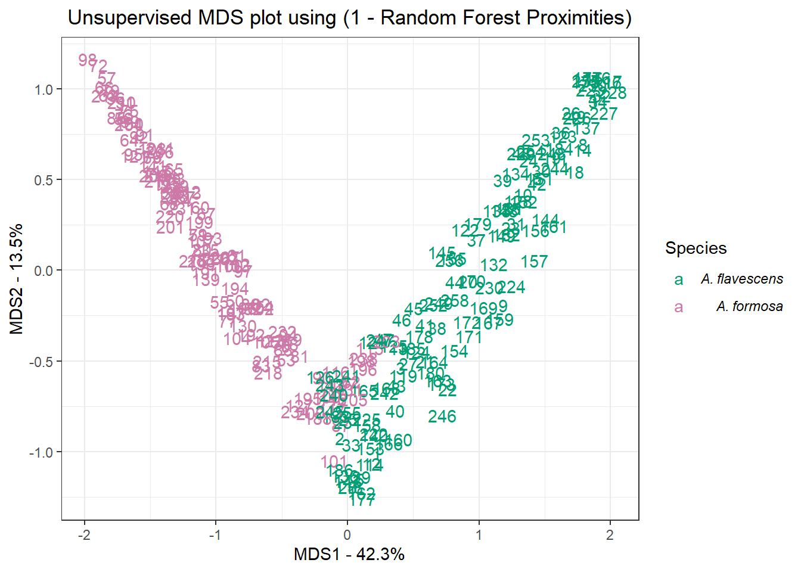

Throughout this course we’ve seen how morphology plays a central role in plant taxonomy. The shapes of stems, leaves, and flowers are often the first traits listed in a dichotomous key. When a trait (like corolla width) is measured and quantified, we are able to use statistical tests to decide how to group or split individuals. The science of measuring and analysing shape is called morphometrics. In this lab, we’ll be using a dataset of Aquilegia flower morphology (see: Lab 1, Ranunculaceae) to determine whether two species, A. formosa and A. flavescens, show evidence of forming hybrids when co-occuring in a contact zone.
Before starting this week’s lab you will have:
downloaded the program Image_J for making morphometric measurements,
downloaded the class google sheet in the file format .csv. Note: if you can’t use imageJ for any reason, don’t panic. Display the digital image of the herbarium sheet on any device and use a ruler held up to the screen to make measurements,
MB: probably need to get students to do some pre-assignment reading on machine learning (decision trees, random forests). Also, some reading on MDS and interpreting MDS plots.
By the end of this tutorial you will:
have experience taking morphometric measurements from herbarium specimens,
understand some core concepts in machine learning and how it can be used in species delimitation,
the tools and knowledge needed to implement machine learning in R as part of a taxonomic research programme,
More?
Let’s get started by attaching the required packages:
randomForest and caret are packages with machine learning tools for classification, regression, and clustering. There are a few ways to implement machine learning. In this lab we will cover using ML in unsupervised mode. This means that the program will have to find the structure of the data itself, without us training it first.
Now we’ll import, subset, and preview the Aquilegia morphometric data from Groh et al (2020):
columbine_url <-
RCurl::getURL('https://raw.githubusercontent.com/jgroh/mosaic/master/data/hrbm-pheno-mosaic.csv')
columbine_data_full <- read.csv(text = columbine_url)
columbine_data <-
columbine_data_full %>%
select(1, 3, 12:19)
head(columbine_data)## Accession.Number species.label corolla.width spur.length blade.length
## 1 V176410 flavescens 1.50 1.1 0.50
## 2 V64139 flavescens 1.50 1.7 0.50
## 3 V33047 flavescens 1.55 1.0 0.60
## 4 V64133 flavescens 1.95 1.4 0.70
## 5 V33046 flavescens 1.30 1.0 0.48
## 6 V34060 flavescens 1.80 1.6 0.80
## blade.width blade.cleft sepal.length sepal.width anther.exsertion
## 1 0.60 0 1.7 0.55 0.9
## 2 0.40 0 1.3 0.40 0.6
## 3 0.70 0 2.0 0.70 0.8
## 4 0.70 0 2.2 0.70 0.4
## 5 0.56 0 1.6 0.50 0.8
## 6 0.90 0 1.9 0.70 0.5Now, we’ll use the randomForest() function to analyse and sort our specimens:
# run the function randomForest() on our morphometric data.
# ntree tells us how many decision trees to build
# mtry is the amount of variables that will be tested at each node of the tree
# proximity=TRUE so that the data saves a proximity matrix
rf <-
randomForest(
columbine_data[,-1],
ntree=30000,
mtry=3,
proximity=TRUE,
keep.forest=TRUE) The randomForest() function generates 30,000 decision trees (ntree) that attempt to classify the specimens based on binary questions posed to the morphometrics data (columbine_data). Each question (‘node’) in the decision tree consideres three morphometric variables (mtry). Setting proximity = TRUE tells the function to calculate a similarity metric between specimens. This will help us to calculate a distance matrix describing how similar or dissimilar each sample is from one another:
Now we’ll perform MDS analysis on the distance matrix:
mds.analysis <- cmdscale(distance.matrix, eig=TRUE, x.ret=TRUE)
mds.var.per <- round(mds.analysis$eig/sum(mds.analysis$eig)*100, 1)
mds.var.per[1:2]## [1] 42.1 13.5The cmdscale() function finds the axes of greatest variation in our morphometrics dataset. For example, if corolla width was the trait that varied the most between all specimens, cmdscale() would assign this variable as MDS axis 1. In reality, it’s unlikely that a single trait will explain the greatest variation in morphology, instead, MDS axes tend to be combinations of traits. In the second step we calculated how much of the total variation of the datset belongs to each of the MDS axes. The third step prints MDS axes 1 and 2, telling us that MDS axis 1 accounts for 42.3% of the morphological variation in the dataset. Each Aquilegia specimen exists somewhere in the ‘shape space’ created by MDS axes 1 and 2. For example, if MDS axes 1 and 2 described variation in corolla and sepal width, respectively, Aquilegia specimens with wide corollas and sepals would exist in the upper right corner of this ‘shape space’. We’ll see what this looks like in the plotting step. We’ll store the shape space location of each Aquilegia sample in an object called mds.data:
mds.values <- mds.analysis$points
mds.data <- data.frame(Sample = rownames(mds.values),
X = mds.values[,1],
Y = mds.values[,2],
Status = columbine_data$species.label)Now we can plot each Aquilegia specimen in morphometric shape space:
mds_plot <-
ggplot(
data = mds.data,
aes(x = X, y = Y, label = Sample)) +
geom_text(aes(color = Status)) +
theme_bw() +
xlab(paste("MDS1 - ", mds.var.per[1], "%",sep="")) +
ylab(paste("MDS2 - ", mds.var.per[2], "%",sep="")) +
ggtitle(" Unsupervised MDS plot using (1 - Random Forest Proximities)") +
scale_colour_manual(name = "Species",
breaks = c("flavescens", "formosa"),
labels = c(expression(italic("A. flavescens")),
expression(italic("A. formosa"))),
values = c("#009E73", "#CC79A7"))
mds_plot
The ggplot() function takes our mds.data object and plots it. MDS1 is the axis explaining the most morphometric variation in our herbarium dataset. Notice that this axis separates A. flavescens and A. formosa.
-KNOWLEDGE CHECK-
When an individual specimen has a low MDS2 value, would it be easier or harder to distinguish the species (and why)? If your specimen had a high MDS2 and MDS1 value, which Aquilegia species is it likely to be?